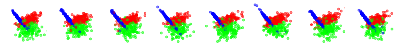

Stream generator¶
A key element of the stream-learn package is a data stream generator that allows to prepare a repetitive, according to the given random_state value, classification dataset based on a default class distributions for the scikit-learn package from the make_classification() function. These types of distributions try to reproduce the rules for generating the Madelon set. The StreamGenerator is capable of preparing any variation of the data stream known in the general taxonomy of data streams.
Stationary stream¶
The simplest variation of data streams are stationary streams. They contain one basic concept, common for the whole course of the processing. Chunks differ from each other in terms of the patterns inside, but the decision boundaries of the models built on them themselves should not be different. This type of stream may be generated with a clean generator call, without any additional parameters.
StreamGenerator()
The above animation contains the scatter plot of a two-dimensional stationary stream with the problem of three classes. The StreamGenerator class in the initializer accepts almost all standard attributes of the make_classification() function, so to get exactly the distribution as above, the exact used call was:
stream = StreamGenerator(
n_classes=2,
n_features=2,
n_informative=2,
n_redundant=0,
n_repeated=0,
n_features=2,
n_clusters_per_class=1,
random_state=105,
n_chunks=100,
chunk_size=500
)
What’s very important, contrary to the typical call to make_classification(), we don’t specify the n_samples parameter here, which determines the number of patterns in the set, but instead we provide two new attributes of data stream:
n_chunks — to determine the number of chunks in a data stream,
chunk_size — to dermine number of patterns in each chunk of data stream.
Not yet implemented
Additionally, data streams may contain noise which, while not considered as concept drift, provides additional challenge during the data stream analysis and data stream classifiers should be robust to it. The StreamGenerator`class implements noise by inverting the class labels of a given percentage of incoming instances in the data stream. This percentage can be defined by a `y_flip parameter.
Streams containing concept drifts¶
The most commonly studied nature of data streams is their variability in time. Responsible for this is the phenomenon of the concept drift, where class distributions change over time with different dynamics, which necessitates the rebuilding of already fitted classification models. The stream-learn package tries to meet the need to synthesize all basic variations of this phenomenon (i.e. sudden (abrupt) and gradual drifts).
Sudden (Abrupt) drift¶
This type of drift occurs when the concept from which the data stream is generated is suddenly replaced by another one. Concept probabilities used by the StreamGenerator`class are created based on sigmoid function, which is generated using `concept_sigmoid_spacing parameter, which determines the function shape and how sudden the change of concept is. The higher the value, the more sudden the drift. Here, this parameter takes the default value of 999, which allows us for a generation of sigmoid function simulating an abrupt change in the data stream.
`python
StreamGenerator(n_classes=3, n_drifts=1)
`
Gradual drift¶
Unlike sudden drifts, gradual ones are associated with a slower change rate, which can be noticed during a longer observation of the data stream. This kind of drift refers to the transition phase where the probability of getting instances from the first concept decreases while the probability of sampling from the next concept increases. The `StreamGenerator`class simulates gradual drift by comparing the concept probabilities with the generated random noise and, depending on the result, selecting which concept is active at a given time.
StreamGenerator(
n_classes=3, n_drifts=1, concept_sigmoid_spacing=5
)
Incremental (Stepwise) drift¶
The incremental drift occurs when we are dealing with a series of barely noticeable changes in the concept used to generate the data stream. Due to this, the drift may be identified only after some time. The severity of changes, and hence the speed of transition of one concept into another, is described by the concept_sigmoid_spacing parameter.
StreamGenerator(
n_classes=3, n_drifts=1, concept_sigmoid_spacing=5, incremental=True
)
Recurrent gradual drift¶
Situations when previous concepts reappear after some time are separately treated and analyzed as recurrent drifts. …
StreamGenerator(
n_classes=3, n_drifts=2, concept_sigmoid_spacing=5, reocurring=True
)
Non-reocurring gradual drift¶
StreamGenerator(
n_classes=3, n_drifts=2, concept_sigmoid_spacing=5
)
Class imbalance¶
StreamGenerator()
Stationary imbalanced stream¶
StreamGenerator(weights=[0.3, 0.7])
Dynamically imbalanced stream¶
StreamGenerator(weights=(2, 5, 0.9))
Dynamically Imbalanced Stream with Concept Oscillation (DISCO)¶
StreamGenerator(
weights=(2, 5, 0.9), n_drifts=3, concept_sigmoid_spacing=5,
reocurring=True, incremental=True
)